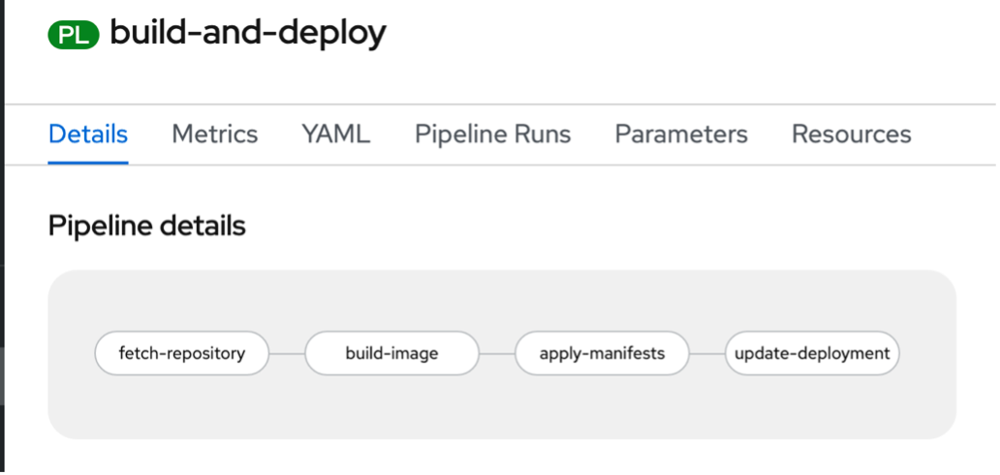

Understanding and Deploying Pipelines¶
A Pipeline consists of a series of Tasks that are executed to construct complex workflows that automate the build, deployment, and delivery of applications. It is a collection of PipelineResources, parameters, and one or more Tasks.
Below is a diagram of the Pipeline you will be creating.

The repository you pulled provides the YAML file necessary to generate this Pipeline.
-
Take a look at the YAML by using the command:
cat pipeline/pipeline.yamlExample Output
user01@lab061:~/openshift-pipelines-s390x$ cat tasks/hello.yaml apiVersion: tekton.dev/v1beta1 kind: Pipeline metadata: name: build-and-deploy spec: workspaces: - name: shared-workspace params: - name: deployment-name type: string description: name of the deployment to be patched - name: git-url type: string description: url of the git repo for the code of deployment - name: git-revision type: string description: revision to be used from repo of the code for deployment default: "master" - name: IMAGE type: string description: image to be build from the code tasks: - name: fetch-repository taskRef: name: git-clone kind: ClusterTask workspaces: - name: output workspace: shared-workspace params: - name: url value: $(params.git-url) - name: subdirectory value: "" - name: deleteExisting value: "true" - name: revision value: $(params.git-revision) - name: build-image taskRef: name: buildah kind: ClusterTask params: - name: TLSVERIFY value: "false" - name: IMAGE value: $(params.IMAGE) workspaces: - name: source workspace: shared-workspace runAfter: - fetch-repository - name: apply-manifests taskRef: name: apply-manifests workspaces: - name: source workspace: shared-workspace runAfter: - build-image - name: update-deployment taskRef: name: update-deployment params: - name: deployment value: $(params.deployment-name) - name: IMAGE value: $(params.IMAGE) runAfter: - apply-manifestsThe Tasks included in this pipeline and their responsibilities are as follows:
-
fetch-repository clones the source code of the application from a GitHub repository based on the git-url and git-revision parameters.
-
build-image builds the container image of the application using Buildah.
-
apply-manifests deploys the application to OpenShift by running the oc apply command on the new container image with the provided parameters.
-
update-deployment will update the application in OpenShift with the oc patch command when changes are needed.
You will notice that there are no references to the GitHub repository or the image registry that will be pushed to in the pipeline. This is because Pipelines are designed to be generic and re-used in different situations or to deploy different applications. Pipelines abstract away the specific parameters that can be passed into the Pipeline. When triggering the Pipeline, you will provide different GitHub repositories and images to be used when executed.
Also notice that the execution order of Tasks can be determined by dependencies defined between Tasks via inputs and outputs, or explicitly ordered via runAfter.
-
-
Create the Pipeline with the command:
oc create -f pipeline/pipeline.yamlExample Output
user01@lab061:~/openshift-pipelines-s390x$ oc create -f pipeline/pipeline.yaml pipeline.tekton.dev/build-and-deploy createdAlthough we are using pre-built YAML files to simplify the creation of these resources, everything in this lab could also be done in the OpenShift console in a browser.
-
Take a look at the graphical representation of your Pipeline by accessing the cluster at the URL: https://console-openshift-console.apps.atsocppa.dmz/
Username: userNN (where NN is your user number) Password: p@ssw0rd
-
Navigate to the Developer Perspective -> Pipelines -> select your userNN Project.

-
Click your new Pipeline called
build-and-deploy.
The framework of your Pipeline has been created, and you can see the four Tasks that make up your Pipeline.
Information
If you remember making the apply-manifests and update-deployment Tasks, but not the “fetch-repository” and “build-image” Tasks -- you aren’t wrong. These are ClusterTasks that come pre-built into OpenShift.
In the next section you will trigger a PipelineRun to execute your Pipeline and the Tasks it contains.